2005年8月5日～26日 東北地方自転車旅行 Part4
2005年、大学のサイクリングクラブの合宿は東北地方だった。大学のサイクリングクラブ部員が写っている写真が多く、貼れない写真が多いので画像は少なめ。
カメラはNikon Coolpix 2100を使用。
8月25日 松島
大学サイクリングクラブの東北地方夏合宿は前日で終了。
同級生と青葉城址を見にいった。
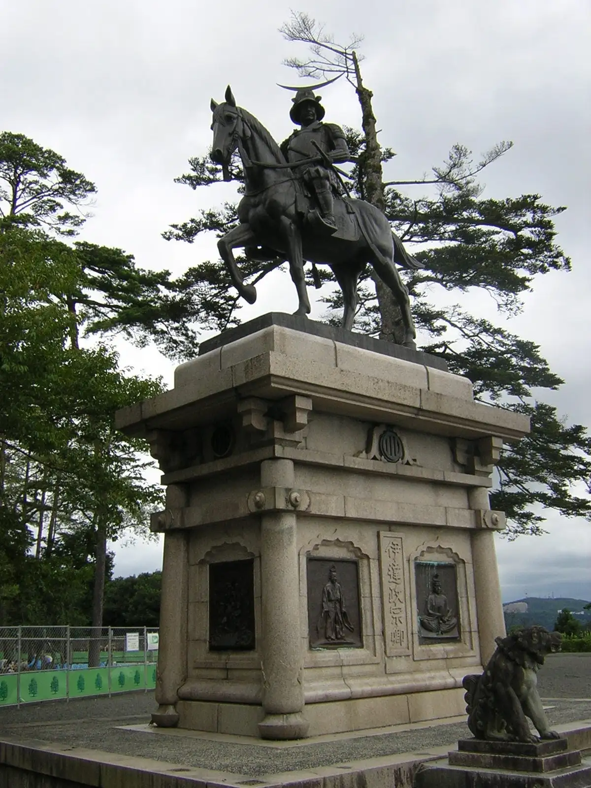そのあと松島まで往復。
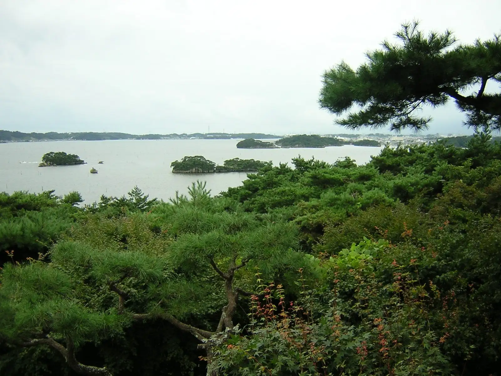体が仕上がりすぎていてヤバい。
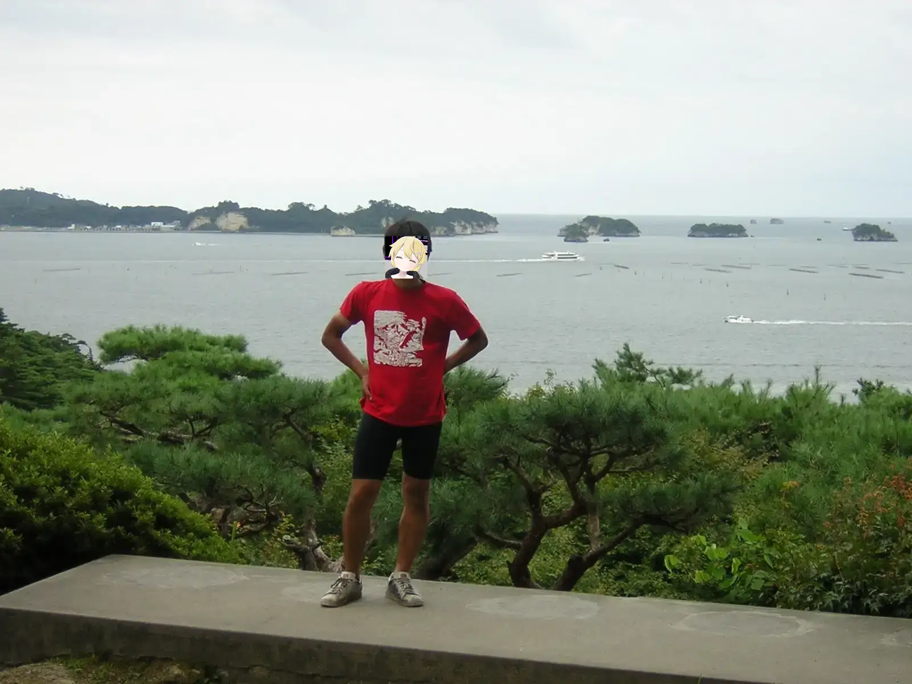このあと、ナイトランで一気に福島まで走った。福島に深夜に到着。どこかで野宿した。
8月26日 磐梯山中腹まで往復
福島県立美術館を見にいった。たしかこのとき、ジェームズ・アンソール展をやっていた。
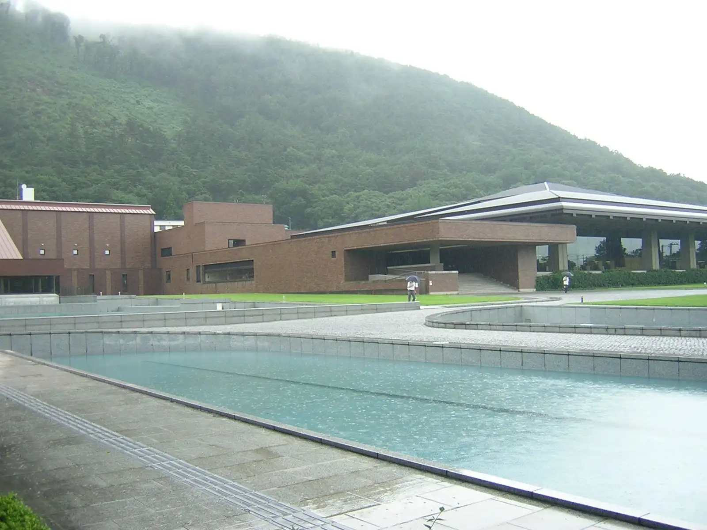このあと、磐梯吾妻スカイラインに行きたかったのだが、通行止めが予告されている。
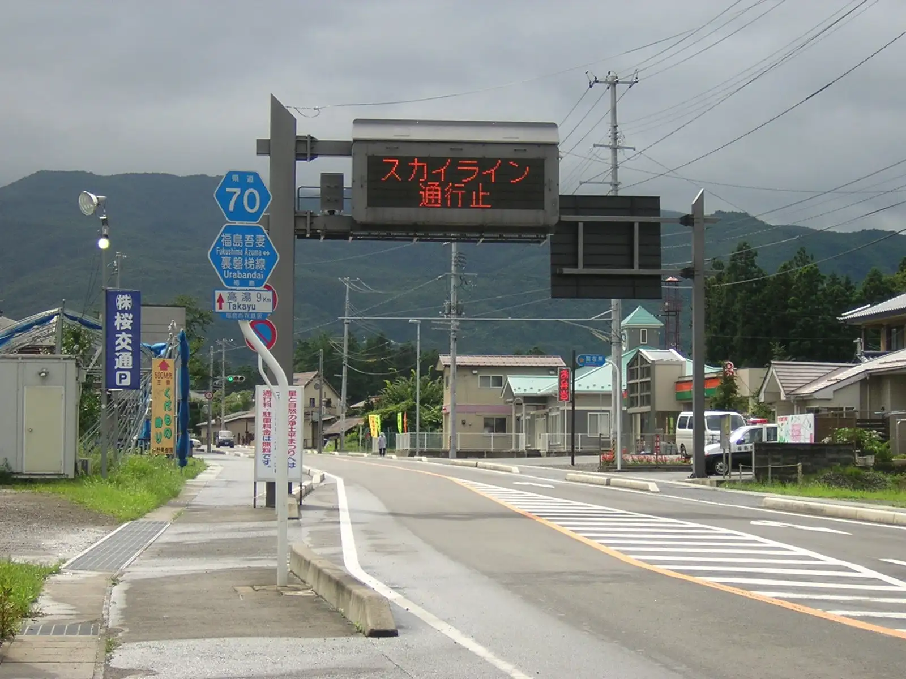行けるところまで行くことにした。
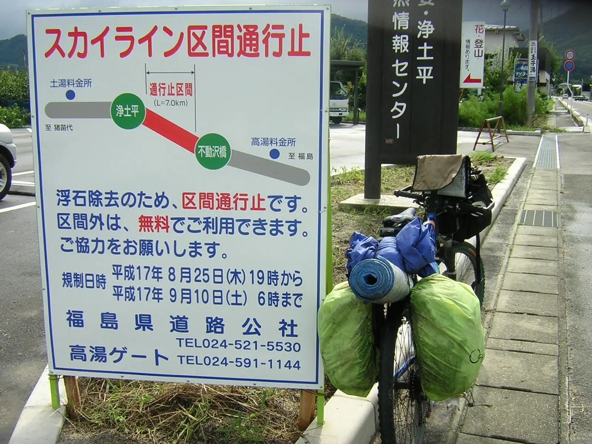再び通行止め予告。
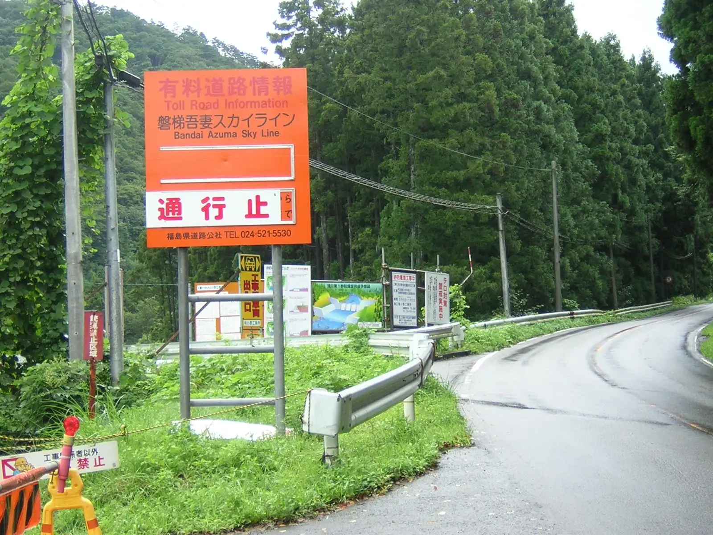もしかするとゲート突破できるのではないかと思って行けるところまで上ったのだが、ゲートまで行くと明らかに突破不可能な状態だった（人がいた）。
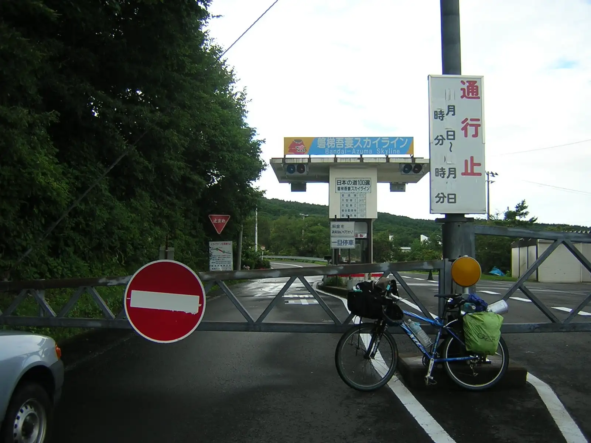諦めて下る。福島市街。
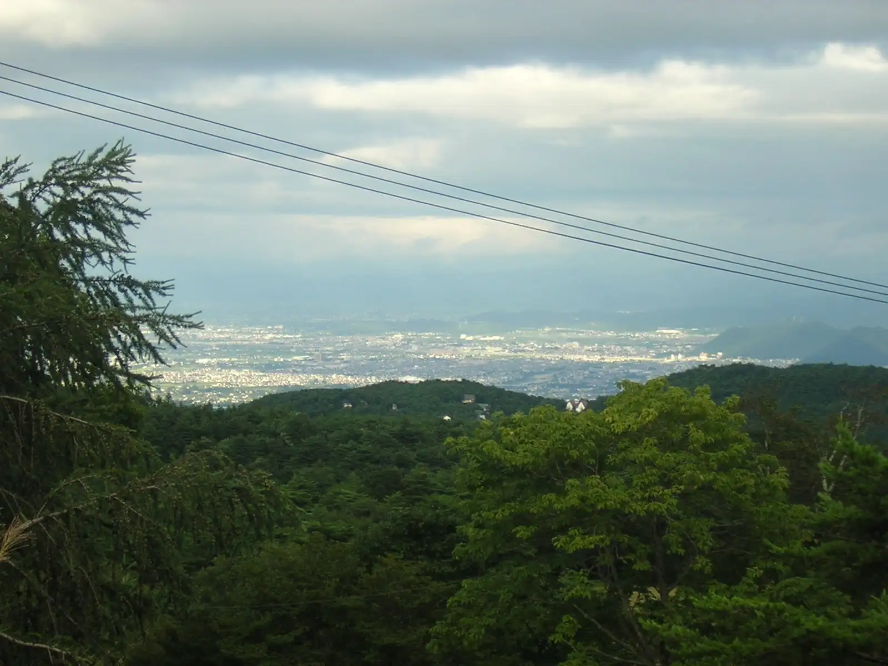いろいろ萎えたので福島駅から輪行して帰ることにした。
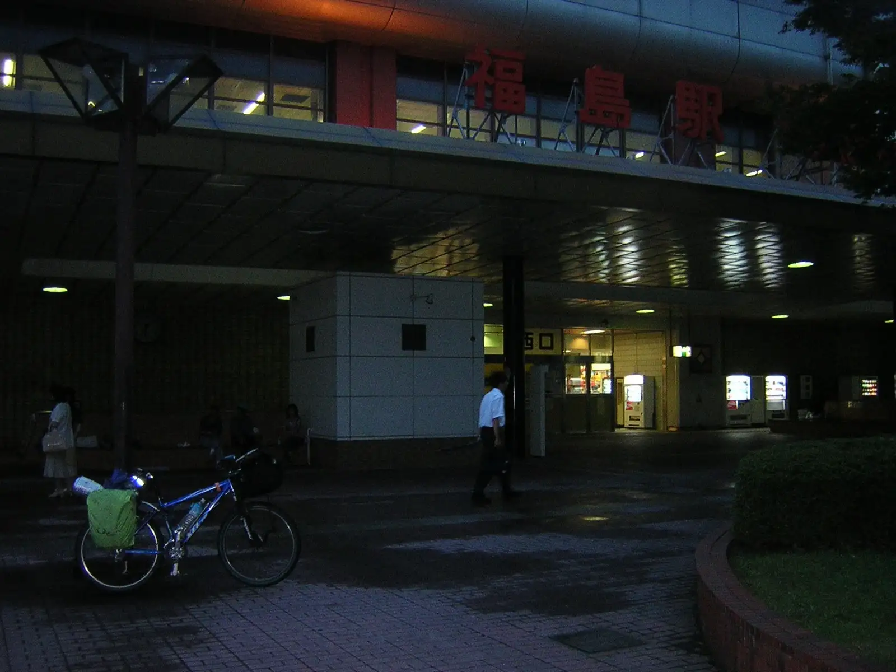東北本線の455系電車。ひたすら18きっぷで帰った。
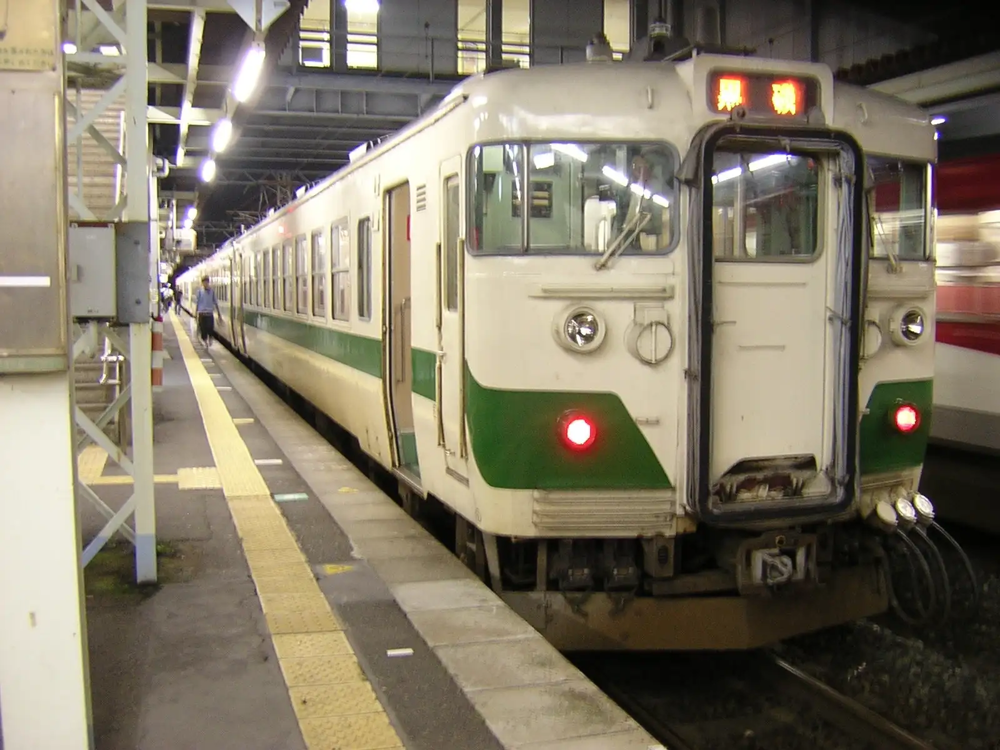これで2005年、東北地方の旅行は終わり。
実家に帰ると「路上生活者の臭いがする」と親に言われた。
2025年12月24日記事公開